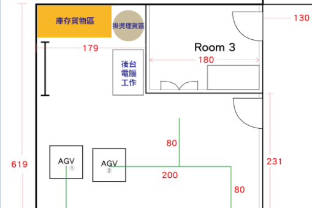

re-envisioned outdated Flash features with wireframing, design
thinking, and an eye for accessibility and created native
Wordpress interactives with Bootstrap, CSS3, and HTML5.

my 3-person team used C#, Unity, and 3D modeling to create a Whack-a-Mole simulation for Introduction to Virtual Reality Design and Development (Fall 2019). tested on the Oculus Go.

User experience architect focused on developing a next-generation, high-tech fitting room experience.